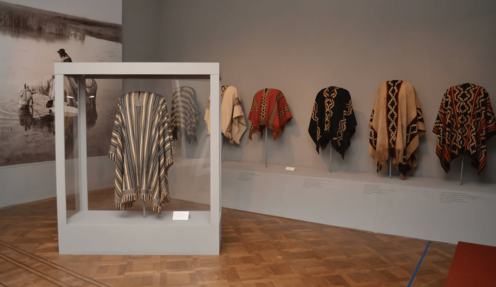

Se propone una serie de tejidos jacquard para ser expuestos en el
Museo José Hernández (MAP) como parte de La Noche de los Museos
2019. La inspiración para los tejidos viene de la mano de la imagen
institucional del MAP y una instrospección hacia aquello nos
identifica como nación hoy, saliendo de la caja que encierra a
gauchos, mates y a quienes le dan nombre a las calles de Buenos
Aires.
Empapados de costumbres y tradiciones, las olas inmigratorias que
fueron moldeando el territorio, se reconfiguraron en una única
cultura y fueron dándoles a sus aportes carácter nacional. Hablar de
Argentina implica hablar de la convivencia del presente con el
pasado: una combinación de tradiciones fusionadas en una. El MAP
resulta en su historia y sus ideales un fiel resflejo de todos los
valores que aún persisten y que nos identifican como nación. Este
trayecto se encuentra plasmado como un juego: la rayuela, que adopta
distintos nombres e identidades pero está presente para el común del
mundo. A través de la resignificación de la cuadrícula que marca un
camino secuencial, se pasa de la concentración a la
desconcentración, con sus límites en los constrastes y saltos de
diferentes trazos de línea o planos de colores.